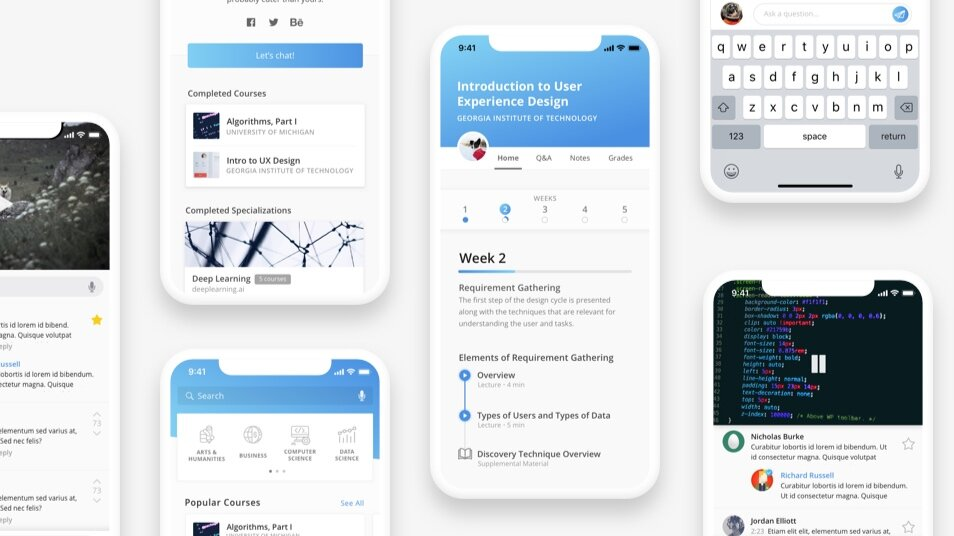
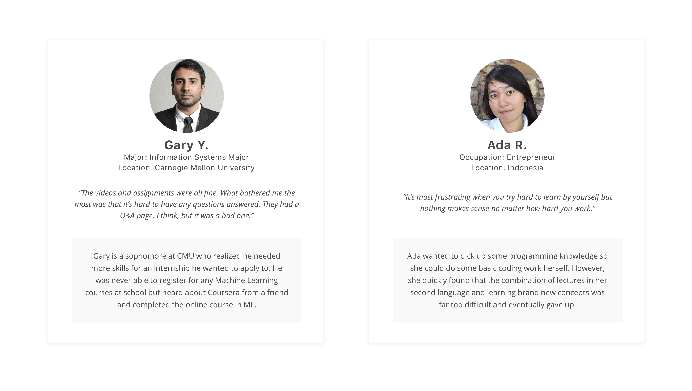
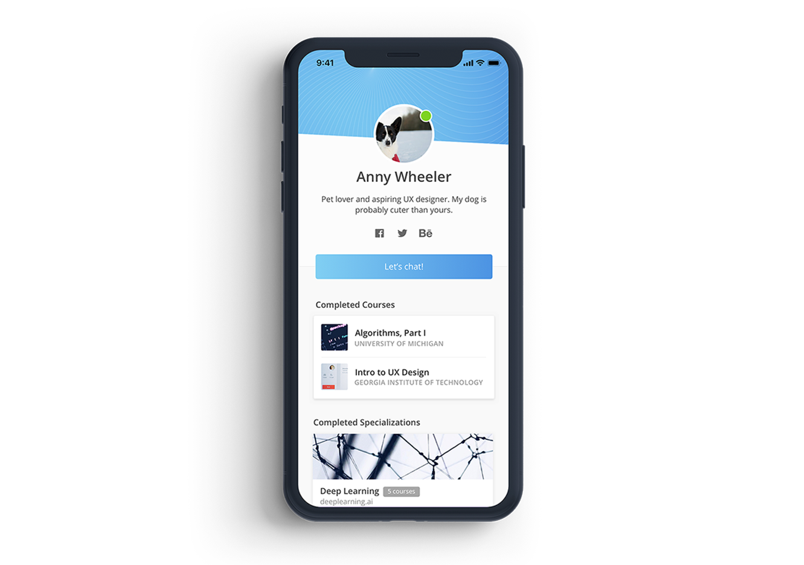
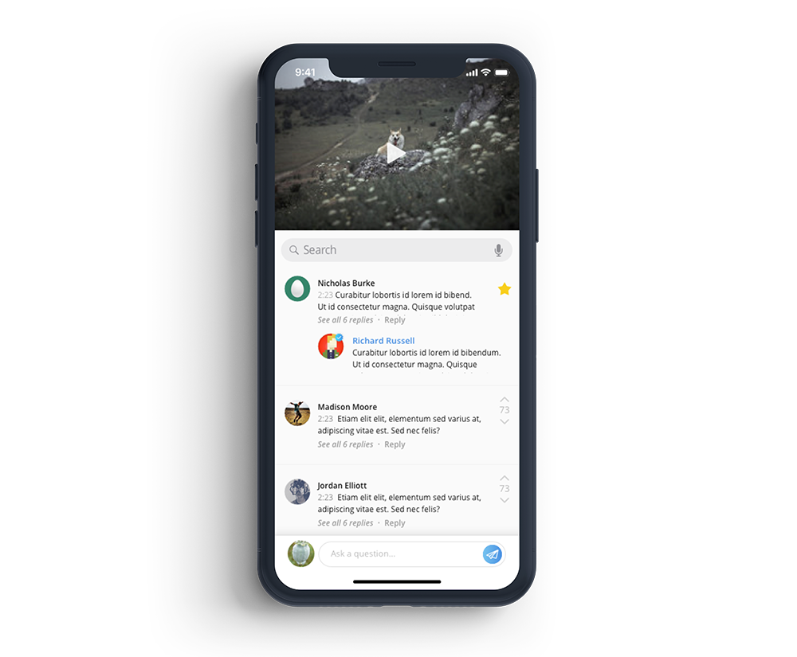
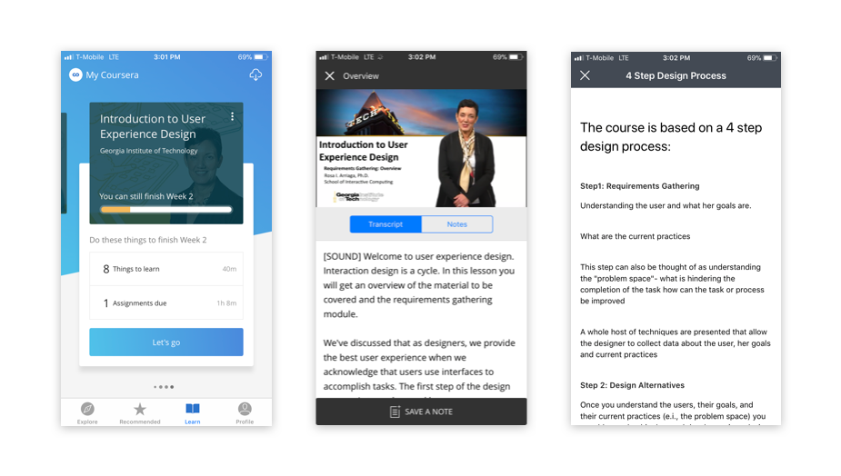

Breaking down the problem
Our redesign works to remedy that in two ways: by providing students with the social aspect that makes the on-campus college experience so valuable, and providing more immediate and personal help to students who need it.

Coursera had 3 general types of users: the dedicated student, the casual learner, and the browsing passerby.
- The dedicated student has enough internal motivation to carry them through the course. Regardless of rigor, the DS will finish their work and complete the curriculum.
- The casual learner has some interest, but doesn't necessarily have enough internal motivation to get him through the course if the work is difficult. The CL will drop the course once the novelty wears off and the work picks up.
- The browsing passerby thinks he is interested, but has no intention on completing the course. The BP will look around before inevitably moving on.

From our research, we created two user personas: Ada and Gary. Ada is a classic casual learner, and Gary is a dedicated student. Ada is bright and interested, but Coursera's structure currently isn't enough to keep her engaged. Gary's willing to put in the work regardless, but really wishes that Coursera could do a little more. We kept their pain points in mind during our design decisions.
After a few interviews with students who had taken both on-campus courses and courses on Coursera, we found that the lack of interaction was one of the biggest reasons why they either didn't keep up with their Coursera classes or never took another one. When going through the curriculum alone, one after another, they found it tedious, almost like a chore
To rectify this, we have users create profile, detailing a short blurb about themselves, the classes they have taken, and other opportunities to connect outside of just Coursera.

Socializing and trading ideas with peers are quintessential parts of the college experience.
Not only do students find peers who share the same difficulties, but they also have the opportunity to learn and grow in the academic environment and beyond. These conversations easily transcend the walls of the virtual classroom and lead to more engaging discourse.
The only current capability for communication between students are the forums available for each course. Although it is a function of the site, students rarely post, and most courses' forums are empty. To integrate a stronger social aspect into Coursera, we focused on recreating what already exists in on-campus colleges currently.
By introducing each student to a study group when they have joined a course, instructors can ensure that each person has people to chat with and ask questions to. Additionally, these groups serve as an option for a variety of learning methods.
- Group assignments: Not only would group assignments allow students to work with new people and find out more about each other, but it's also a great way for people to see what other people do and alternative career possibilities.
- Actual study groups: If the material gets hard, the group serves as a resource for struggling students to reach out. It's less intimidating to reach out to a small group of under ten than to post on a public forum in front of the entire class.
- Discussion groups: It is common for professors to ask the class to break into groups and discuss about a topic. The same can be done with these preset groups, either with forums or in a chat.

How these groups are made can depend on a variety of things, like time zone, work schedule, level of commitment to course, etc. There are a lot of factors that can be played with here, and study groups can be tweaked for maximum efficacy. Online schools might not be able to support clubs or other mainly physical activities, but this is a great way to introduce a diverse range of students to each other.
While adding a social component to Coursera could boost it in many regards, it doesn't solve the immediate problem of getting students the direct help they need.
Many students may have difficulty with the same concepts, and it's beneficial to help them earlier rather than later.

To help with this, we want to integrate an active time-based Q & A with the video lectures. Under each video would be a running messenger chat in which students can interact. If a question had been asked three minutes into the lecture by a previous student, the question and answer would pop up in the chat three minutes into the video.
This would give students watching the lectures the ability to pause the video and better understand something they may not have gotten from the lecture, just like the past student. If they don't need the extra tutoring, the video just continues to play and the student ignores the question.
On-campus students don't always ask questions in class, but can always benefit from listening to the questions that others pose. They may also be too shy to raise their hands and to ask the question, but appreciate it when another student asks for clarification as well.
This is the same concept as asking the professor a question in class, just on an online platform.

One of the most frequent negative feedbacks we got from current or past Coursera users is that there isn't enough immediate help from professionals, like instructors or mentors. These professionals (as well as other students who know the answer) can respond to students' questions, providing help not only to them but also every student who watches the lecture.
These questions will show up in the Q & A forum on the main course page as well for easy access, but we see the most benefits coming from when they come up during lectures. There, they are the most relevant, and will really help students with difficult concepts.

Here are a few screenshots of the original app with hierarchy problems, bad depth perception, and a questionable number of shades of blue. We cleaned up the app with more cohesive brand and a cleaner approach overall.